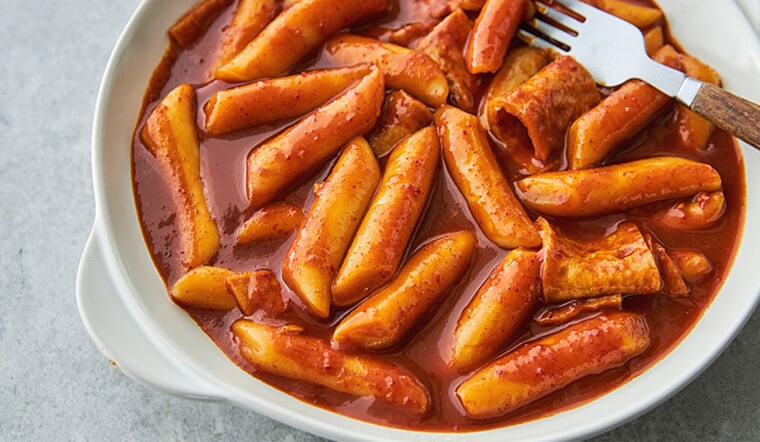

Tok

Description
Korean tteokbokki recipe.
Tteokbokki is one of the most popular Korean street foods in Korea. Among other things, today’s recipe is made
with Korean rice cakes, Korean fish cakes, Korean soup stock / dashi stock and gochujang (Korean chili paste)!
It’s super delicious, umami rich and highly addictive! So much so that even if your tummy is full, you will
still have some room for these spicy rice cakes!
Ingredients
Steps
- Unless your rice cakes are soft already, soak them in warm water for 10 mins.
- Boil the soup stock in a shallow pot over medium high heat and dissolve the tteokbokki sauce by stirring it
with a spatula. Once the seasoned stock is boiling, add the rice cakes, fish cakes and onion. Boil them a
further 3 to 5 mins until the rice cakes are fully cooked. Then, to thicken the sauce and to deepen the
flavor, simmer it over low heat for a further
- Add the sesame oil, sesame seeds, and green onion then quickly stir. Serve warm.